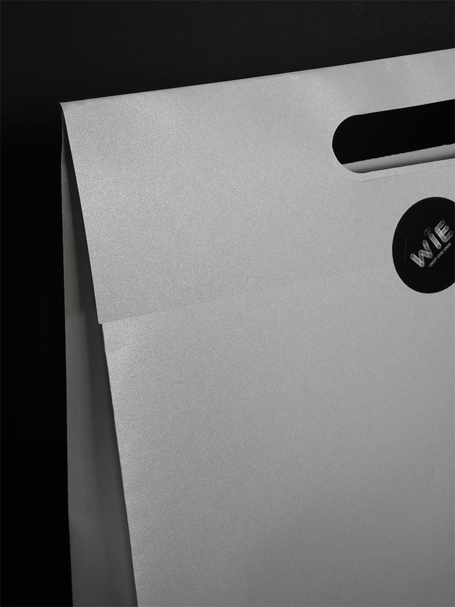
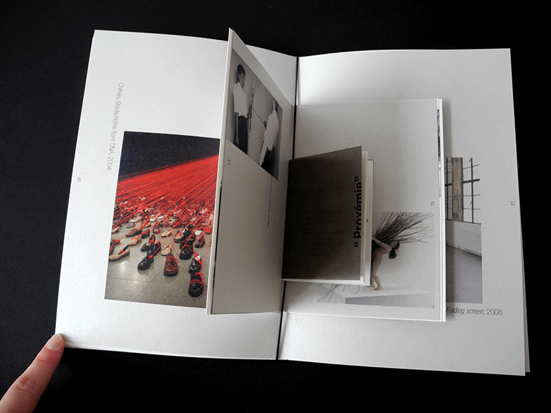

WÏE
-
Création de l’identité visuelle du concept store sonore «Wïe», au sein de la gare du nord à paris. Le projet repose sur le principe de proxémie mît en place par l’anthropologue Edward T. Hall. Cette notion est utilisée afin de retranscrire les différents rapports d’intimité de l’homme à travers le son, à l’aide d’un parcours expérimental.
Logo, papeterie, affiches
Projet de design global réalisé en groupe avec Maryline Rodrigues, Emma Oddou, Louisiane Heidsieck et Adrien Bonnafous.